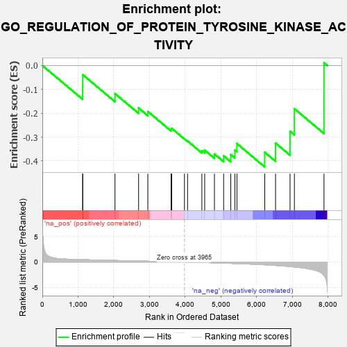
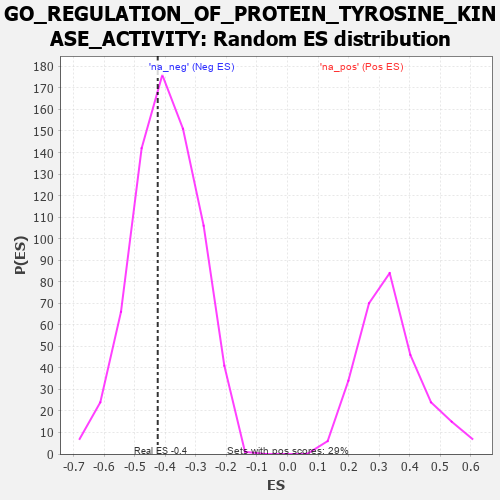

| | | Dataset | 7d |
| Phenotype | NoPhenotypeAvailable |
| Upregulated in class | na_neg |
| GeneSet | GO_REGULATION_OF_PROTEIN_TYROSINE_KINASE_ACTIVITY |
| Enrichment Score (ES) | -0.42502788 |
| Normalized Enrichment Score (NES) | -1.0651572 |
| Nominal p-value | 0.394958 |
| FDR q-value | 0.79435104 |
| FWER p-Value | 1.0 |
Table: GSEA Results Summary

Fig 1: Enrichment plot: GO_REGULATION_OF_PROTEIN_TYROSINE_KINASE_ACTIVITY
Profile of the Running ES Score & Positions of GeneSet Members on the Rank Ordered List
| PROBE | GENE SYMBOL | GENE_TITLE | RANK IN GENE LIST | RANK METRIC SCORE | RUNNING ES | CORE ENRICHMENT | | 1 | SRC | | | 1128 | 0.459 | -0.0900 | No |
| 2 | NCK2 | | | 1131 | 0.458 | -0.0385 | No |
| 3 | VPS25 | | | 2033 | 0.300 | -0.1178 | No |
| 4 | ZGPAT | | | 2694 | 0.200 | -0.1783 | No |
| 5 | SOCS4 | | | 2953 | 0.157 | -0.1929 | No |
| 6 | DOK7 | | | 3603 | 0.059 | -0.2679 | No |
| 7 | CBL | | | 3621 | 0.056 | -0.2637 | No |
| 8 | CHMP6 | | | 3977 | -0.003 | -0.3079 | No |
| 9 | TAL1 | | | 4064 | -0.018 | -0.3167 | No |
| 10 | ERCC6 | | | 4464 | -0.087 | -0.3570 | No |
| 11 | NTRK2 | | | 4543 | -0.104 | -0.3551 | No |
| 12 | FBXW7 | | | 4816 | -0.161 | -0.3710 | No |
| 13 | RAP2C | | | 5073 | -0.218 | -0.3786 | Yes |
| 14 | EPHA4 | | | 5273 | -0.265 | -0.3736 | Yes |
| 15 | DLG4 | | | 5388 | -0.293 | -0.3549 | Yes |
| 16 | CBLB | | | 5445 | -0.306 | -0.3273 | Yes |
| 17 | MVP | | | 6223 | -0.543 | -0.3636 | Yes |
| 18 | ACE | | | 6526 | -0.674 | -0.3253 | Yes |
| 19 | LRP8 | | | 6931 | -0.889 | -0.2756 | Yes |
| 20 | GRM5 | | | 7053 | -0.969 | -0.1812 | Yes |
| 21 | FYN | | | 7881 | -2.622 | 0.0113 | Yes |
Table: GSEA details [plain text format]

Fig 2: GO_REGULATION_OF_PROTEIN_TYROSINE_KINASE_ACTIVITY: Random ES distribution
Gene set null distribution of ES for GO_REGULATION_OF_PROTEIN_TYROSINE_KINASE_ACTIVITY